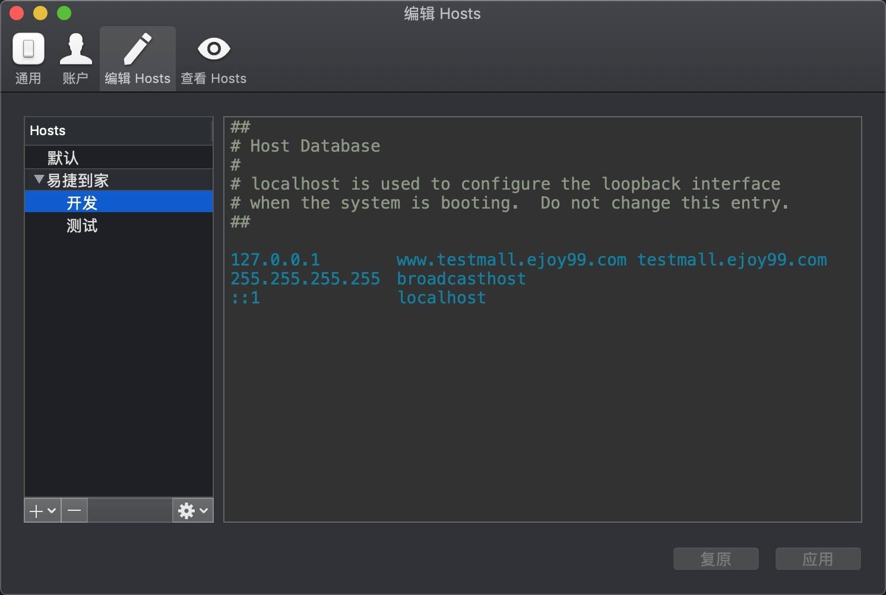

域名解析
修改hosts文件
1 | sudo vi /etc/hosts |
mac下可以下载ihost管理hosts文件，如下：

证书生成
工具：openssl、keytool
准备req.cnf
DNS设置保持更hosts中设置的一致，CN设置成域名1
2
3
4
5
6
7
8
9
10
11
12
13
14
15
16
17
18[req]
distinguished_name = req_distinguished_name
x509_extensions = v3_req
prompt = no
[req_distinguished_name]
C = CN
ST = ZheJiang
L = HangZhou
O = Kxll
OU = Mall
CN = www.testmall.ejoy99.com
[v3_req]
keyUsage = critical, digitalSignature, keyAgreement
extendedKeyUsage = serverAuth
subjectAltName = @alt_names
[alt_names]
DNS.1 = www.testmall.ejoy99.com
DNS.2 = testmall.ejoy99.com
生成私钥和自签名证书
1 | openssl req -x509 -nodes -days 365 -newkey rsa:2048 -keyout com.ejoy99.testmall.key -out com.ejoy99.testmall.crt -config req.cnf -extensions 'v3_req' |
转化jks
1 | crt to p12 |
https配置
https的配置有两种方案，一种是使用nginx、另外一种是使用pfctl+tomcat，日常开发中建议使用后者，简单一些，pfctl负责端口转发，修改tomcat配置支持https。pfctl也可使用其他工具替代。
使用nginx
安装nginx后，修改配置文件，mac下可以使用brew安装
1 | # 开启80 443监听，域名设置为testmall.ejoy99.com |
启动nginx
1 | nginx |
使用tomcat
这个过程使用pfctl转发80、443端口到8080、8443，tomcat配置8080、8443端口，设置证书，并开启https强制跳转。
non-SSL/TLS HTTP/1.1 Connector、SSL/TLS HTTP/1.1 Connector设置
mac环境下使用pfctl设置端口转发，将80、443端口（http、https对应的端口）分别转发到8080、8443端口，windows可以使用其他工具
1 | ## 执行命令 |
# 代理设置
tomcat配置server.xml，开启8080端口、8443端口1
2
3
4
5
6
7
8
9
10
11
12
13
14
15
16
17
18
19<!-- 8080端口开启，默认开启 -->
<Connector port="8080" protocol="HTTP/1.1"
connectionTimeout="20000"
redirectPort="8443" />
<!--
8443端口开启，参考以下配置，替换成自己生成的证书
certificateKeystoreFile 为jks证书
certificateKeyAlias 为证书别名
certificateKeystorePassword 为证书密码
-->
<Connector port="8443" protocol="org.apache.coyote.http11.Http11NioProtocol"
maxThreads="150" SSLEnabled="true">
<SSLHostConfig>
<Certificate certificateKeystoreFile="conf/com.ejoy99.testmall.jks"
certificateKeyAlias="com.ejoy99.testmall"
certificateKeystorePassword="123456"
type="RSA" />
</SSLHostConfig>
</Connector>
tomcat配置web.xml，强制转换成https
1 | <!-- 在web-app标签结尾添加以下内容 --> |
注
tomcat使用http自动跳转https的时候都会在域名后自动加上https端口，未解决。
例如：访问http://www.testmall.ejoy99.com/wap/跳转后变成https://www.testmall.ejoy99.com:8443/wap/由于本地环境没有图片，因此访问
upload的图片地址都会失败，所以在测试服务器上将upload单独设置一个server共本地环境访问， 已解决。最好使用https访问。